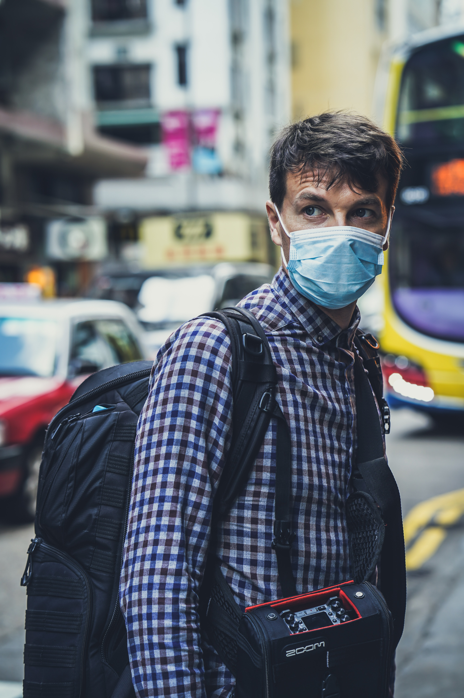

Those infected may either be asymptomatic or develop symptoms including fever, cough or shortness of breath. Diarrhea or upper respiratory symptoms (e.g. sneezing, runny nose, sore throat) are less frequent. Cases can progress to pneumonia, multi-organ failure, and death.
The incubation period ranges from 1 to 14 days with an estimated median incubation period of 5 to 6 days according to the World Health Organization.
A WHO review of 55,924 laboratory-confirmed cases in China indicated the following typical signs and symptoms: fever (87.9% of cases), dry cough (67.7%), fatigue (38.1%), sputum production (33.4%), shortness of breath (18.6%), sore throat (13.9%), headache (13.6%), myalgia or arthralgia (14.8%), chills (11.4%), nausea or vomiting (5.0%), nasal congestion (4.8%), diarrhea (3.7%), hemoptysis (0.9%) and conjunctival congestion (0.8%).[33] Another study of of 1,099 Chinese patients found that CT scans showed ground-glass opacities in 56% of patients, but 18% had no radiological findings. 5% of patients were admitted to intensive care units, 2.3% needed mechanical support of ventilation, and 1.4% died. Bilateral and peripheral ground glass opacities are the most typical computed tomography findings, according to researcher Bernheim et al. Consolidation, linear opacities, reverse halo sign are other radiological findings. Initially the lesions are located to one lung, but as the disease progress, indications manifest to both lungs at 88% of patients.